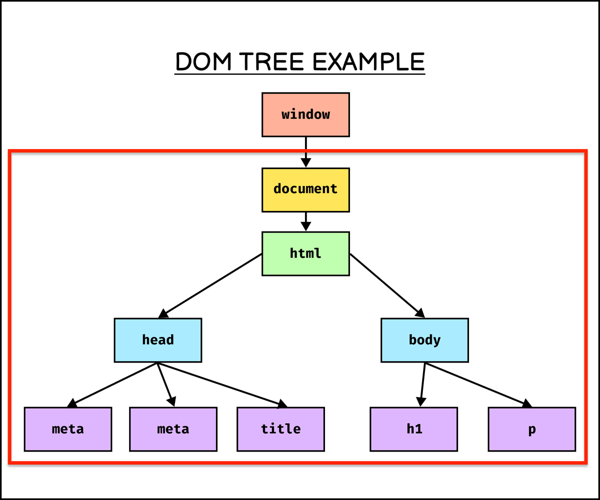
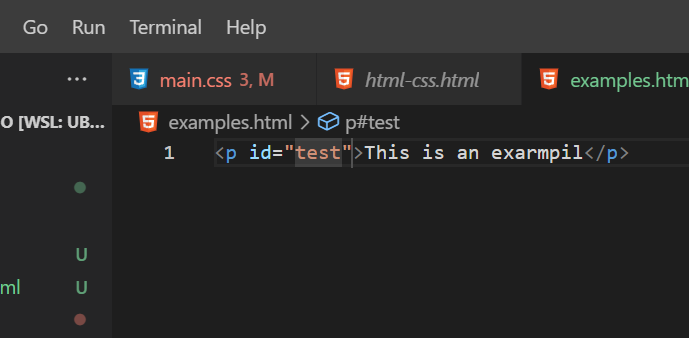
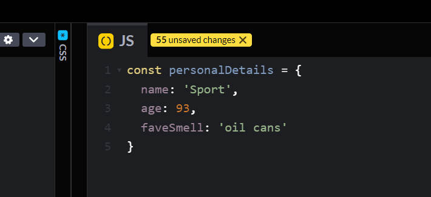

HTML creates and structures the website's content, CSS adds style and formatting to these structures, and then JavaScript turns those stylized components into something that a user can interact with. A good way to think of it is to compare the creation of a web site to building a house. HTML is the blue print and structure, the walls , the foundation, the rooms and what you want in them. CSS is the styling or interior decoration. Paint colours, furniture style and placement, even the type of art to put on the walls! JavaScript is how we interact with everything, the light switches, heating and cooling and running the appliances.
Control flow refers to the order in which statements or functions are executed in a program. Loops are used to repeat a set of instructions (code) until a certain parameter is met. An example of these in everyday life could be baking a cake. You follow a recipe in order with sequential steps: pre-heat the oven, prepare ingredients, mix ingredients, place mix in dish, place dish in the oven, cook til done, remove from oven and let cool.
A conditional step would be whether you have all the ingredients available
An example of a loop in this process would be checking the temperature or how cooked the cake is periodically until the cake is cooked through.
The DOM stands for document object model. It is the data representation of all the objects that make up the structure and content of w a web page. While not a programming language itself it is a web API (Application Programming Interfaceused) to build websites, it is platform an language neutral. This means that the DOM allows us to dynamically manipulate the style, content and structure of a document.
The DOM represents the structure of a document as a tree of objects, where each object corresponds to a part of the document, such as an element, attribute, or text.
We can make changes through the DOM and JavaScript to a website. Say for example we notice a spelling mistake in some text.
We can access that line of code with javascript by referencing the Id of that paragraph and inserting the correct text, for example: document.getElementById('test').innerHTML = "This is an example"
We access the docment an addres a specific section by its ID (test), then we can replace the text inside the 'p' tags with the command .innerHTML
Arrays are ordered collections of elements of the same type e.g names ['Mark', 'Juice', 'Freckle', 'Squirrly Dan'] or numbers ['34', '98', '3', '55']. An item in an array is accessed by its index, which starts at 0. So four items will be indexed as 0,1,2,3. The fourth item will be index number 3, enjoy!
Objects are collections of key-value pairs and are used when grouping multiple sets of data that belong together
In this example the key is the 'name' and the value is 'Sport'
Objects are ideal for storing data with corresponding properties (keys), someones personal details for example.
In summary, arrays are great for ordered lists, while objects are perfect for key-value pairs where you need to label each piece of data.
A javascript function is a block of code designed to complete a particular task when called (activated). This code is versatile and can be applied over and over and used in other fuctions or assigned to other variables, this allows for less complex code to be required.